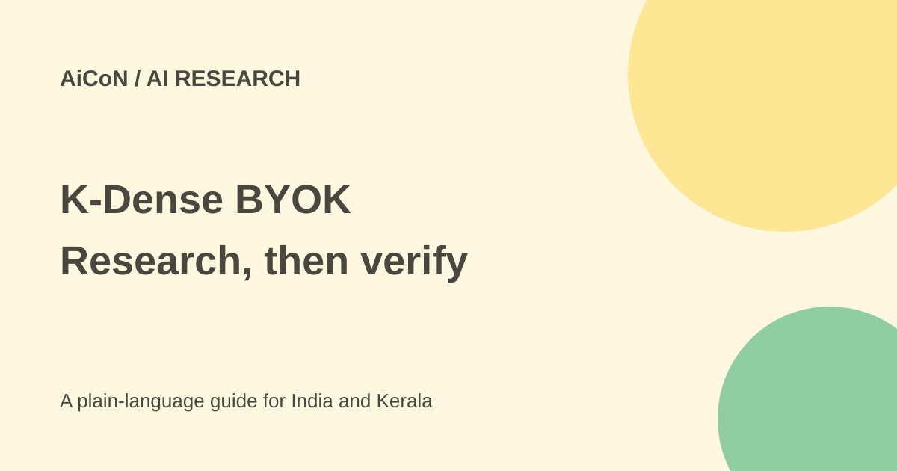

K-Dense BYOK: a local research app with real limits
K-Dense BYOK is a free research application you run on your computer. Its assistant, Kady, can analyse data and prepare figures, but local installation does not make every workflow private or cost-free.

What can Kady do?
The project describes tasks such as analysing a dataset, reviewing a manuscript, writing and running code, finding literature and making figures or reports. You describe the task in ordinary language. Projects, conversations, notebooks and results live in folders on your own computer.
That can reduce routine coding work, but it does not remove the need to understand an analysis. Check the method, input data, assumptions, figures and citations. A notebook written by AI is not independent proof that a scientific result is valid. The project reports its own benchmark results; they do not guarantee performance on your research.
Free app, separate access and costs
The actual licence is MIT. The app is free to obtain, while hosted model usage, subscriptions and optional compute remain separate. It supports OpenRouter, several direct providers, compatible subscriptions and local models through Ollama or an OpenAI-compatible server.
A subscription login does not mean unlimited usage. The README distinguishes metered providers included in its optional project spending cap from provider-managed subscriptions and credit plans whose usage is displayed separately. The limitations page says concurrent or in-flight calls can overshoot a cap and external-CLI specialists can bypass the ledger. Provider-side limits and bills still matter.
A local model avoids that model's hosted API bill, but needs your computer's resources. Check every optional service before turning it on. A hosted gateway behind a local-looking model address can still charge.
Privacy: local files are only part of the picture
When you choose a hosted model, the material required for a request goes to that provider under its terms. The project's limitations also say web search, connectors and Modal compute can receive task data. Local speech and multi-model features have specific provider requirements. Do not assume an entire session stays on-device merely because its notebook is local.
More importantly, tools run as the backend computer's operating-system user. The project workspace is not process isolation: a same-user shell can read other accessible files and credentials. A destructive-command guard cannot inspect every script's effects. Use a separate account, container or virtual machine for untrusted material, keep backups and review third-party skills.
How to try it
- Read the current README and limitations before installation. Treat it as beta software.
- Use a supported macOS, Linux or Windows 10/11 computer. Native Windows setup needs Node.js 22+ and Git for Windows, according to the README.
- Follow the official clone-and-start steps. The first start installs dependencies; inspect scripts before running them.
- Open the local browser interface and create a project using sample or public data.
- Choose the provider in Model providers or API keys. Confirm its charges, permissions and whether task data leaves the machine.
- Start with a small, reversible analysis. Ask for methods and inspect generated code before relying on the figure.
- Save raw data separately, back up results and verify references against original papers.
No installation or research run was performed for this guide. Its steps follow the current project documentation.
For Kerala students and researchers
A student can start with a public dataset rather than patient records, confidential survey responses or an unpublished client manuscript. Check Malayalam labels and local units when making figures. If a university restricts external AI processing, a local app connected to a hosted provider may still breach that restriction.
Use AI to prepare work you can inspect, not to invent missing results or references. Keep an analysis reproducible through saved input, code, versions and method notes.
What changed since the original post?
The 1 October post correctly separated local folders from hosted model processing. This guide adds the current same-user shell warning, optional external-service flows and spending-cap exceptions. "No coding needed" should not be read as "no review needed".
Frequently asked questions
Is it completely offline?
Only a carefully configured local workflow can be. Hosted models and optional services can send data out.
Is the workspace a secure sandbox?
Not process isolation. The limitations page warns about same-user shell access.
Are AI citations already verified?
No. Check the original papers yourself.
Sources: Official repository · MIT licence · Current limitations. Checked 7 October 2026.